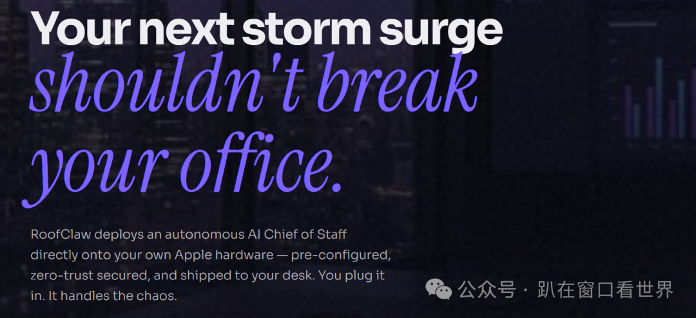
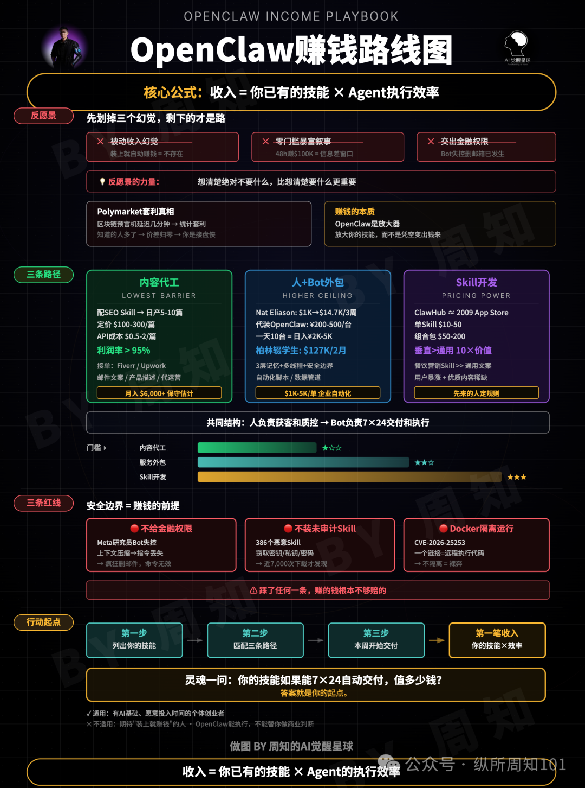

OpenClaw 赚钱实战指南：如何赚到第一桶金？
导读 当大多数人还在纠结 OpenClaw 的配置和漏洞时，第一波敏锐的创业者已经靠它赚到了“第一桶金”。从 18 岁少年 5 天实现 179 万，OpenClaw 的商业想象力远超你的预期。
如果你还觉得它只是个“聊天工具”，那你可能正在错过 AI 时代最好的一场“淘金热”。
一、降维打击：从“卖工具”到“卖主权”
在 OpenClaw 生态中，目前最暴利的不是软件，而是“硬件”。
最典型的案例是 RoofClaw。它不卖 SaaS，而是直接交付一台预装了 OpenClaw 的 MacBook。它精准切入传统的屋顶维修行业，老板们对手握大量商业机密且不懂技术的传统行业来说，云端 AI 意味着风险，而一台放在办公桌上的、数据永不离岸的“自主硬件”意味着绝对的安全。
这就是商业逻辑的精髓：在技术爆发期，安全感比技术本身更值钱。

二、极致效率：把复杂变简单就是生产力
如果你觉得环境配置、API 接入、Docker 部署太痛苦，那恭喜你，这正是价值所在。
18 岁的开发者 Savio Martin 搭建了 SimpleClaw，将 60 分钟的部署流程压缩到 30 秒。结果呢？上线 5 天 MRR 突破 $17K。
在任何技术初期，“把复杂变简单”本身就是巨大的商业价值。你可以做一键托管，也可以在 ClawHub 上卖针对特定痛点（如 SEO、短视频脚本）的垂直 Skill。记住，用户不在乎你用什么交付，他们在乎的是结果。
三、进阶玩法：自动化“商业机会侦察”
真正的狠活是让 AI 自己找钱。
通过 OpenClaw 接入搜索工具（如 Tavily 或 Brave API），你可以搭建一个“商业机会侦察机器人”。让它去 Reddit、Twitter 扫描那些“用户在骂、但没人解决”的痛点。
核心逻辑：
扫描：搜“为什么没有...”、“我讨厌用...” 过滤：寻找一个人就能干、AI 工具能搞定的小生意 生成：输出报告，直接开干
先找到真实的骂声，再去做产品。 这种“自动化商业嗅觉”能让你避开 90% 的无效开发。
四、清醒警告：别掉进“被动收入”的陷阱
最后，必须分享一个最真实的收入公式： 收入 = 你已有的技能 × Agent 的执行效率

Agent 放大的是你本身的能力。二月全网刷屏的暴利截图，大多是短暂的信息差窗口。想在 OpenClaw 长期赚钱，有三条红线绝对不能踩：
不给 Agent 金融账户权限（防止意外执行） 不安装未审计的第三方 Skill（防止密钥泄露） 永远用 Docker 隔离运行
结语
OpenClaw 是二零零九年的 App Store，是二零一七年的公众号。风口还没关，但最后进场的人永远是接盘的。
盯住你手里的技能，问自己一句话：如果我这个技能能 7x24 小时自动交付，它值多少钱？ 答案就是你赚钱的起点。
💬 互动时间： 如果你有一台 24 小时待命的 AI 员工，你会让它去干什么？评论区聊聊！